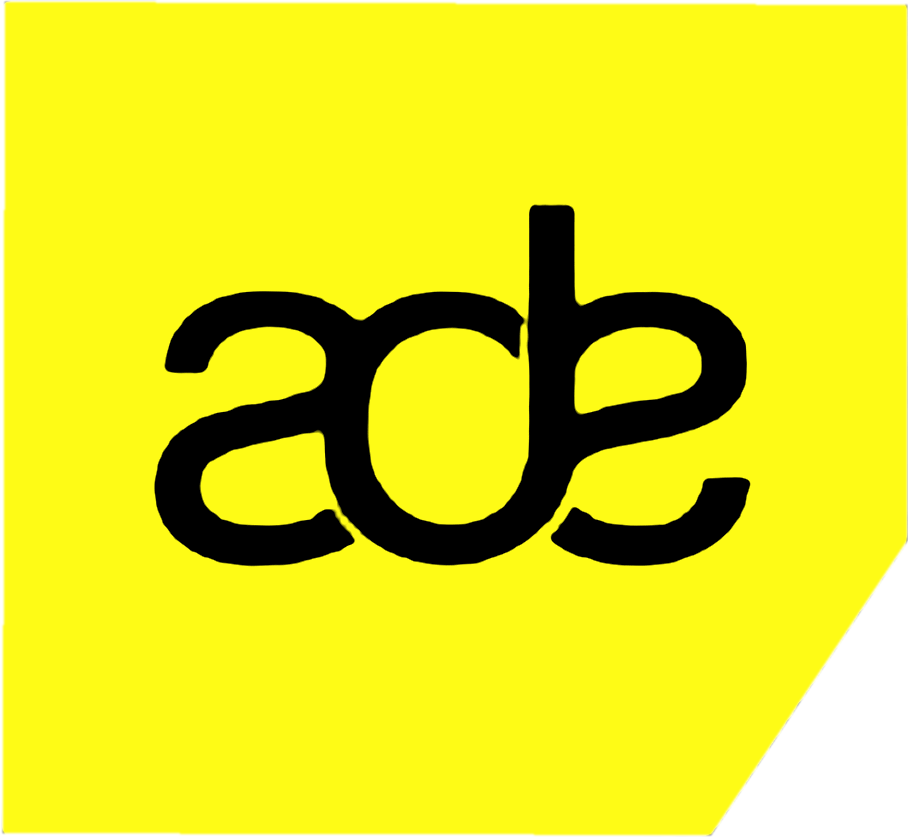

Amsterdam
Dance Event
2026
Conference
Festival
Culture
Network
SEOUL
BANGKOK
JAKARTA
ADE 2026 / Asia Hub
Connecting
the dots
Regional scenes & multi-territory touring
South Korea, Thailand & Indonesia
Thursday
22 October 2026
15:10 – 16:00
Salon 188
Singel 188H
Panel briefing
Marc Lankreijer
Host · Netherlands
Nakadia
Thailand / Berlin
Arsit Prachaseri
Thailand
DKAY
South Korea
BETTER / Sunny Kim
South Korea
Sabrina Moelyono
Indonesia
Music
/
People
/
Regions
/
Opportunities